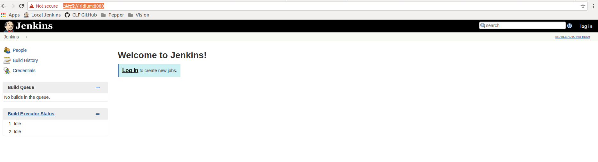
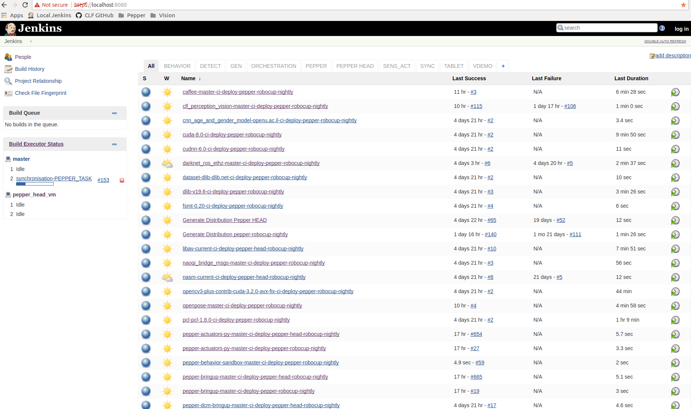

Open a terminal of your choice (Terminator, XTERM, whatever you like...)
touch $HOME/.netrc
gedit $HOME/.netrc
Add the following three lines to the file (.netrc). Florian will tell you what to use instead of 'XXX'
machine projects.cit-ec.uni-bielefeld.de
login XXX
password XXX
Save the file (CTRL+s), close gedit.
In the shell again, clone the CITK recipe repository as shown below.
cd /media/local_data/citk/
mkdir -p dist && cd dist
git clone https://opensource.cit-ec.de/git/citk .
Okay, fine. Now you have all the recipes in order to install the Pepper System.
Next you need to start the Jenkins CI Server. We already deployed one for your convenience :D
/media/local_data/citk/jenkins/start_jenkins
Well, now open a web browser of your choice and go to: CLICK HERE!. BTW, the CI Server is running on the machine in front of you. You should see something like this:
Login to the Jenkins (top right corner) use the user: citec and password: citec
Yeah, back to the terminal open another terminal please, don't close the first one since the Jenkins CI Server in running inside that terminal...
Now you'll generate all the necessary build jobs that will eventually deploy (install) the entire system for you AUTOMAGICALLY.
cd /media/local_data/citk/jenkins
./job-configurator --on-error=continue \
-d /media/local_data/citk/dist/distributions/pepper-robocup-nightly.distribution \
-m toolkit -D toolkit.volume=/media/local_data/citk/systems -u citec -p citec \
-D make.threads=6 -D cudagen=Pascal --cache-directory=/tmp/cache_dir
What happens now is that our magic works. After this command has finished (which could take a while) go back to the JENKINS. You should see a lot of new jobs that are grey (they haven't been built yet). YES! Just build them. You don't need to trigger them all manually, just look for the build job pepper-robocup-nightly-toolkit-orchestration and click on the tiny clock icon to the right.
Now the entire system is build and deployed on your system. When it's done you should see all job become BLUE. You are now done. For further instructions, ask Florian.
What you can do is:
cd /media/local_data/citk/systems/pepper-robocup-nightly/bin
./vdemo_pepper-default.sh